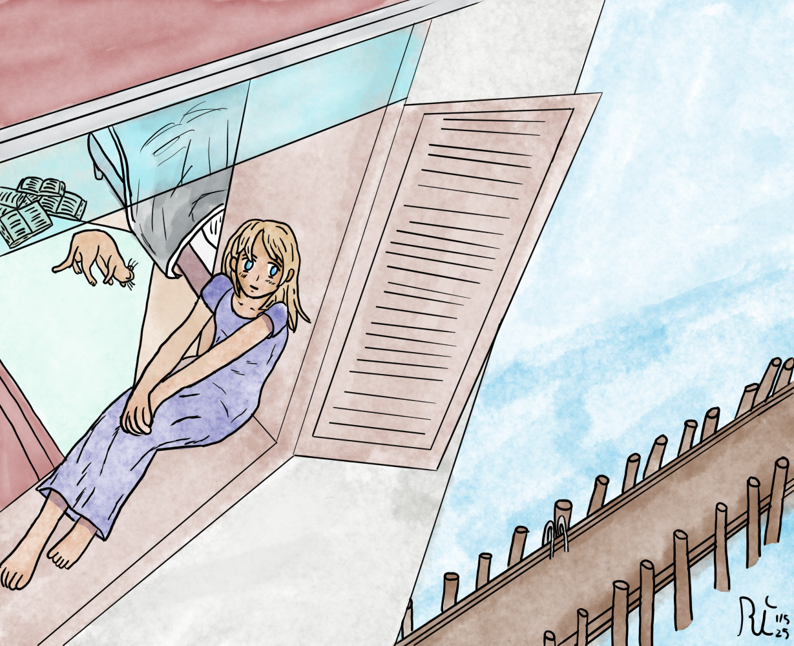

Hello, and welcome to the new blog!
I'm sure as you guys can see, I completely changed the layout of my blog. This was something I'd been thinking about for a while.
But why?
This was a layout I always wanted but decided that I didn't want to do it at the time, and instead, I went for Jekyll. But I wanted to make things more personal, and include things that I couldn't before. So now, here we are.
What about the old layout?
Its currently archived right now, just hidden. If I decide that the current iteration is too much to handle, then I can always fall back on it. Otherwise, this will be the new base of operation, and the old layout isn't going to be used for now.
I now have a section with all my old artwork, (mostly) organized neatly by year and date made, a completely different section for the tutorial series, to make it easier to follow.
While this takes more work for me to run, I think it's overall not too bad.
Did you make any new art?
Sorta? Because I spent so much time the past month working on the new layout, and the next part of the tutorial is done, I didn't really have time to many any art for the new year. But that's okay, it's just another year.
But outside of the new tutorial section I made, I also made a completely new banner! I spent a fair amount of time working on it, and I'm planning on working on my coloring more this year. But here it is, without the text.
I quite liked how it turned out! At any rate, your bookmarking/rss should be the same, so no need to update it. But if you haven't, please subscribe to my RSS to get the latest updates on my work!
That's all from me today, I hope you guys had a good holiday/new years, and I'll see you guys next time.